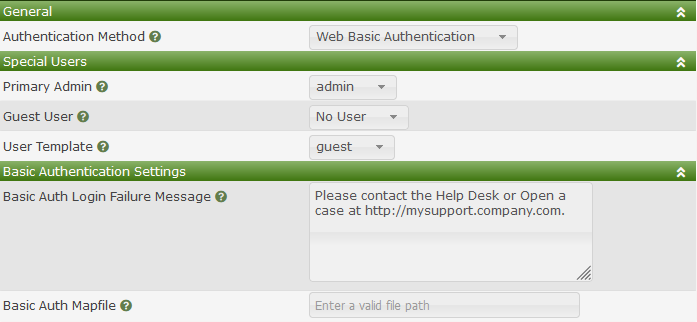

Basic Auth settings leverage both Apache's and NGINX Authentication modules to grant a user access to the Cacti Website. The various configuration steps for these modules will not be covered in the Cacti documentation. Therefore, if you wish to use this authentication method, it is recommended that you test your configuration on a development server before putting this method into production.
NOTE: Before enabling the Basic Authentication Method, you must always verify that you are prompted for a password before getting the normal Cacti login prompt, and that you have setup a new user account with Admin privileges that matches your login account. Otherwise when you enable Basic Authentication, you can lock yourself out of the Cacti Website.
The image below shows the settings for Web Basic Authentication which includes the Special Users sub-section.

Those settings include:
None, disables this feature.This settings is important for plugins that grant certain features to accounts, but those accounts do not match the login account. For example, your basic account maybe: joe.schmoe@company.com, and your UNIX login account may be jschmoe, which grants you certain plugin permissions, like controlling your own workload.
The mapfile is a file in CSV format, with the first column being the Basic account (aka joe.schmoe@company.com), and the second column being the login account (jschmoe). It is up-to the Cacti administrator to manage and update this file per their local site practices.
Copyright (c) 2004-2024 The Cacti Group